Dynamica is a rigid body simulation system for Autodesk Maya that uses the open source Bullet Physics framework. The Dynamica toolset allows users to create complex rigid body simulations which can be integrated into a wide range of production pipelines. The performance characteristics of the Bullet Physics framework allow large numbers of rigid bodies to be simulated at reasonable frame rates. This enables the rapid iteration needed to meet art direction requirements. With Dynamica, it is possible to work comfortably with thousands of simulated rigid bodies in a single scene.
Download the latest installation files for your OS/Maya version from the Dynamica Project Page:
- Precompiled versions of the Dynamica plugin can be downloaded from http://code.google.com/p/bullet/downloads/list
- The source code of the Dynamica plugin has its own repository at http://dynamica.googlecode.com
Install and enable the plug-in
- Run the installer.
- Start Maya and go to Window > Settings/Preferences > Plug-in Manager:
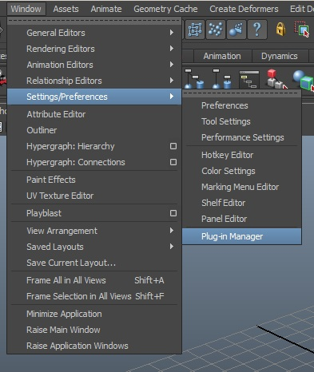 - Scroll down to find an entry for Dynamica/Bullet and check the boxes labeled Loaded and Auto load:
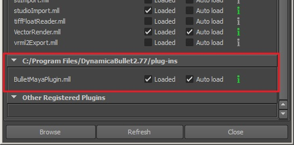Microsoft Windows plug-in path. - Look for a shelf named Dynamica and click the Bullet icon:
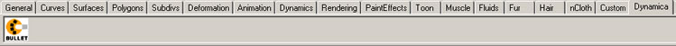Dynamica Shelf and Bullet icon.
To create a simple rolling sphere
- In the Dynamica UI, click on "Create passive plane". It creates an infinite plane centered in (0,0,0). With the rotation manipulator, tilt the plane a little bit.
- Deselect the plane. Click on "Create active sphere". It creates an active rigid body with a sphere as collision shape, centered in (0,0,0). With the move manipulator, move it up to (0,10,0). (Important: when creating a rigid body, if something is selected, the newly created rigid body has it's initial position and rotation set to the one of the selected object)
- Now roll back the time slider to the first frame and click play (Remember to extend the animation range as necessary).
To create a Dynamica rigid body with an arbitrary mesh
- Create a polygonal mesh in Maya, for example, an helix. With the helix still selected, click on "Create active Mesh". A new rigid body is created, with the helix as input to the Mesh collision shape. Alternatively, "Create active Convex Hull" could be used. The convex hull provides faster simulations at the expense of less precise collisions (if the input mesh is convex, there is no difference between Convex Hull and Mesh collision shapes in terms of precision).
- Then repeat the same steps of the Simple rolling sphere example.
To create a rigid body array
- Create a maya polygonal mesh in Maya, for example a torus. Resize the torus so that the size of the bounding box is around 1x1x1.
- With the torus still selected, hit "Create Active Rigid Body Array" in the UI. As small dialog box appears, asking for the dimensions of the array and the offset between the rigid bodies. Enter (10, 20, 10) for the dimensions and (2.5, 2.5, 2.5) as offset.
- Create a passive plane as before, then translate the rigid body array so that all donuts are above the plane.
- Roll back the time slider to the first frame and click play.
proc setConfiguration()
{
//the name of the rigid body array node
string $rigidBodyArray = "myRigidBodyArray";
//set the number of bodies
setAttr ($rigidBodyArray + ".numBodies") (10 * 10 * 10);
for($i = 0; $i < 10; $i++) {
for($j = 0; $j < 10; $j++) {
for($k = 0; $k < 10; $k++) {
//set the initial position
setAttr ($children[0] + ".initialPosition[" + string($i + 10 * $j + 100 * $k) + "]") ($i * 2) (10 + $k * 2) ($j * 2);
//set the initial rotation to (0, 0, 0)
setAttr ($children[0] + ".initialRotation[" + string($i + 10 * $j + 100 * $k) + "]") 0 0 0;
}
}
}
}
- Maya Plugin Intro (28Mb)
- Using Maya Force Fields (17Mb)
- Creating Donuts (11Mb)
- Creating Peanuts, used in upcoming Bolt Movie (29Mb)
- Part of Bolt trailer with Peanuts shot (26Mb)
- Sphere - creates an active primitive rigid body sphere
- Box - creates an active primitive rigid body cube
- Plane - creates an active primitive rigid body plane
- Hull - creates an active rigid body hull based on a selected mesh object
- Mesh - creates an active rigid body mesh based on a selected mesh object
- Sphere - creates a passive primitive rigid body sphere
- Box - creates a passive primitive rigid body cube
- Plane - creates a passive primitive rigid body plane
- Hull - creates a passive rigid body hull based on a selected mesh object
- Mesh - creates a passive rigid body mesh based on a selected mesh object
- Sphere - creates an array of active primitive rigid body spheres
- Box - creates an array of active primitive rigid body cubes
- Plane - creates an array of active primitive rigid body planes
- Hull - creates an array of active rigid body hulls based on a selected mesh object
- Mesh - creates an array of active rigid body meshes based on a selected mesh object
- Nail - pins a rigid body in place or to another rigid body and allows free rotation in any direction.
- Hinge - constrains a rigid body in place or to another rigid body and allows rotation about a single axis relative to the z-axis of the constraints transform. Hinges support automatic rotation via motor attributes.
- Slider - constrains the translation of a rigid body along a single axis relative to the x-axis of the constraints transform.
- 6Dof - constrains the rotation of a rigid body with 6 Degrees of Freedom. Upper and lower limits can be set for both translation and rotation.
The Activate/Break tab is used to control the timing of rigid body activation and constraint deactivation (breaking). By default, an active rigid body responds to simulation forces starting on frame 1 and constraints remain active continuously. These tools can prevent this behavior and instead suspend simulation or break constraints on a specified frame. Both single frame and multi frame activation are supported, the latter being useful for creating progressive activation effects such as a crumbling wall, radial fracture, or sporadic structural failure (to name just a few).
Three Input Methods (Axis Gradient, Radial Gradient, and 3D Texture) are supported in Multi Frame mode to control the timing of rigid body activation during the specified frame range. Additionally, enabling Compute Mass and specifying a density value can increase the realism of rigid body interactions by computing mass based on bounding box volume.
Applying activation adds two attributes to each rigid body - activateFrame and activateMass. These are used by an expression node to control the mass attribute of the rigid body shape. A mass of 0 effectively turns the active rigid body into a passive rigid body, while a non-zero value re-activates it. The expression sets the rigid body mass to the value of activateMass when activateFrame is reached on the timeline. Setting activateFrame to 0 effectively disables activation. These attributes can also be edited via the Channel Box or Attribute Spread Sheet if fine adjustments are necessary.
Constraint breaking works in a similar way. An constraintBreakFrame attribute is added to each rigid body bound by constraints. An expression compares the value of this attribute to the current frame during playback - when the two match, the constraint is deleted, freeing the rigid body.
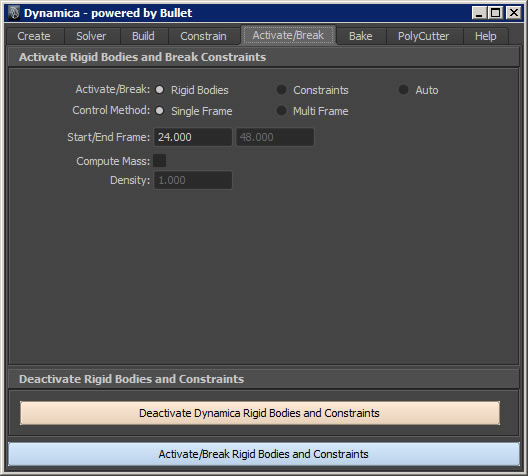
This field remains inactive unless Compute Mass is checked. The density value (default is 1.000) is multiplied by the computed mass.
Three options are available when the Multi Frame Control Method is enabled: Axis Gradient, Radial Gradient, and 3D Texture. Each of these input methods use the Start/End frame range to control when rigid bodies activate or constraints break.
Axis Gradient
Radial Gradient
3D Texture
The Bake tab is used to bake all or part of the simulation into keyframes within the user specified frame range. Optionally, construction history, static channels, and empty nodes can be deleted (this is recommended). The process begins by copying the scene to a new file of the same name, but with _BAKED appended to the filename (i.e. dynamicaScene1.mb -> dynamicaScene1_BAKED.mb). A valid Project workspace must be active.
To minimize memory usage, Undo is temporarily disabled and only translation and rotation are stored as keyframes. It is also recommended that history, static channels, and empty nodes be deleted during post processing. Maya RigidBody nodes (not the same as Dynamica rigid bodies!) are automatically deleted during this process - these result from using fields to influence Dynamica rigid bodies. Using recommended settings results in a clean efficient scene ready for the next phase of production.
Baked scenes can be used as the basis for continued production. Baked objects can be converted back into passive rigid bodies using Build options. This allows content creators to build scenes containing many thousands of simulated rigid bodies.
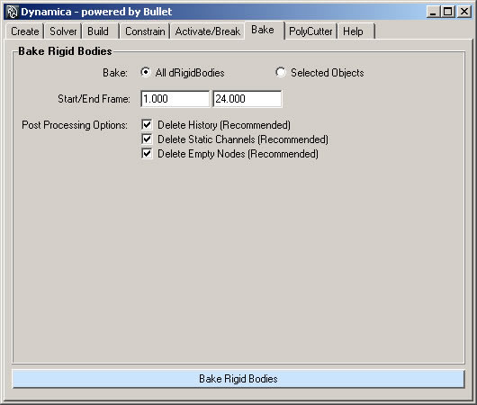Delete History (Recommended) will purge all construction history on the baked objects.
Delete Static Channels (Recommended) removes any flat keyed channels (animation curves which do not change over time).
Delete Empty Nodes (Recommended) deletes all unused and empty nodes.
Optimize Channels (Recommended) removes static channel regions - this can reduce bake data, overhead, and resulting file size dramatically (50%+).
The PolyCutter tab contains options for slicing poly meshes with NURBS surfaces. Pre-shattered objects often require adjustments to produce more realistic behavior and meet the needs of art direction. For example, structures tend to fail where different materials are connected to each other or where primary structural elements change - such as the connection of a bridge deck to it's abutments.
An arbitrary number of poly meshes can be selected, but only one NURBS surface. The order in which the objects are selected does not matter. The NURBS surface must pass all the way through each selected poly mesh.
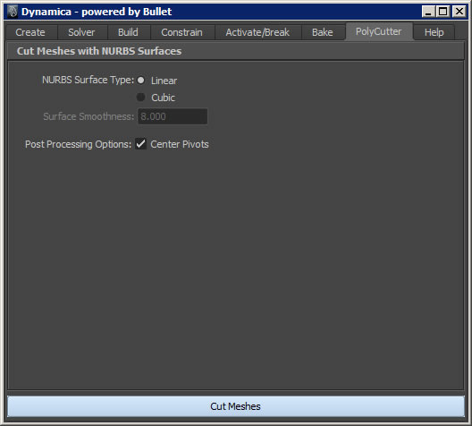The Dynamica tools are designed to address the demanding needs of art directors who often require many iterations of a shot with specific choreographies - all in a short period of time. In order to meet these needs, the simulation artist must have a high degree of control over the simulation and the ability to iterate rapidly. Features such as axis and radial activation, automatic constraint generation, and optimized baking support these rapid workflows. Dynamica also takes advantage of Maya's native scene management features to keep the simulation organized.
It's important to understand how Dynamica workflows fit into the production pipeline. Dynamica rigid bodies serve a single specialized purpose - physically accurate behavior in the presence of forces and constraints. Unlike typical objects and animation systems in Maya, Dynamica simulations and rigid bodies are not renderable unless geometry is parented to each body and then baked into keyed motion. This means that simulations should be created and edited in their own scenes, baked, and then integrated into the next phase of production.
This "restriction" actually proves to be quite flexible in practice. Let's say that you are responsible for a shot involving a 19th century naval battle. You are charged with simulating the physical destruction of a ship due to canon fire and an explosion. The art director sends you a single concept image and specifies 9 canon shots from the enemy ship successively penetrate the hull with the final shot detonating the munitions store. The explosion rips through the deck and hull, shredding the sails, toppling the mast, and setting everything ablaze.
Let's assume a total fragment count of 50,000. Let's also assume that the art director needs to sign off on all the details of the simulation, approving each canonball impact along the way. You can start with the first impact by converting all the associated fragments into Dynamica rigid bodies, adding a field or two (radial and turbulence should do it), and editing a multi frame activation sequence. When the art director signs off on your work, you can bake the sequence and move onto the next shot - converting the previous sim into keyed passives if necessary. After the entire rigid sim is built and baked, you can then add the cloth and rope (using Maya nCloth perhaps), using the keyed rigids as colliders to create dynamic interaction and add to realism.
- A Radial Gradient could be used to create crumbling from a local impact and a series of Axis Gradients could then be used to control secondary fracturing caused by the impact.
- 3D Texure activation can simulate the effects of random structural failure from fire or earthquake. Axis Gradients could be combined with this effect to control the timing and behavior of structural collapse.
- An Axis Gradient can create a vertically progressing fracture on a surface and then areas of the surface can be disabled to maintain structural integrity.
This workflow will demonstrate rigid body creation, activation, and baking.
- Start with a new scene in Maya. Create ten standard size polygon cubes (disable interactive creation if needed). Distribute them along the X axis, one unit apart.
- Duplicate the set of ten cubes ten times, moving them up (+Y) one unit each time. You should now have a 10 x 10 set of cubes.
- Move them up (+Y) off the reference grid 7 or 8 units.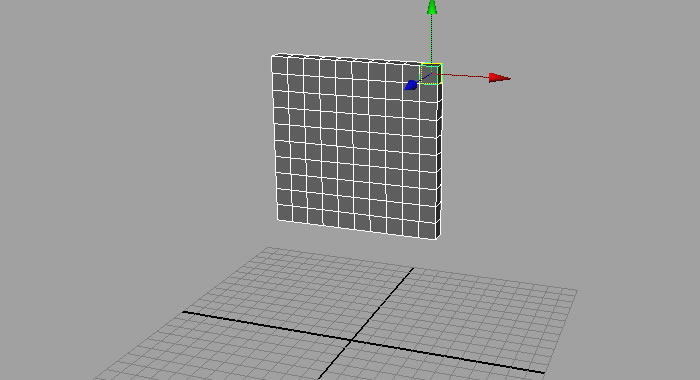10 x 10 set of cubes arranged along the x-axis and 7-8 units above the reference grid.
- Find the Dynamica shelf and click on the Bullet icon. This opens the main Dynamica window.Dynamica shelf and Bullet icon.
- Click on the Create tab. Under Passive Rigid Bodies, click Plane. An XZ plane named dRigidBody1 appears in the scene centered at the origin. This will serve as a ground collision surface. You can optionally hide this object to make selecting the other objects easier. Hiding it from view will NOT hide it from the simulation.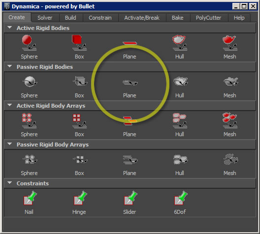Dynamica window, Create tab, Passive Rigid Body section, click Plane.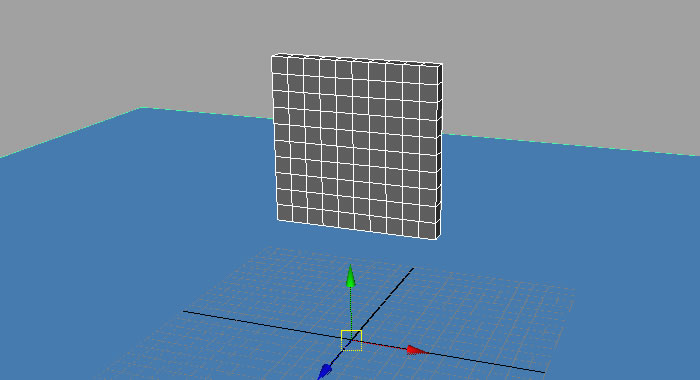Passive XZ Plane centered at the origin.
- Select the cubes. In the Dynamica window, select the Build tab. Leave the settings at their defaults and click the Build Rigid Bodies button at the bottom of the window.
If the viewport is in wireframe mode, you will see slightly smaller triangulated cubes inside the original polygon cubes - the gap between each cube represents the collision margin. In the Outliner, two new groups have appeared - dRigidBodies and dCollisionMeshes. The dRigidBodies group holds the generated dRigidBody objects - which are parents to the original polygon cubes. In the dCollisionMeshes group you will find polygon objects that were generated from the Margin setting in the Build options - these are the surfaces from which the dRigidBodies were created.
You will also find two Display Layers - DynamicaMeshes and DynamicaRigidBodies. The DynamicaMeshes layer holds the original polygon cubes - it's display mode is set to Reference - to make selection of the dRigidBodies in the viewport easier. You can hide this layer to see only the dRigidBody objects. The DynamicaRigidBodies layer holds the dRigidBody objects - you can select them here via right-clicking and choosing Select All from the popup menu.
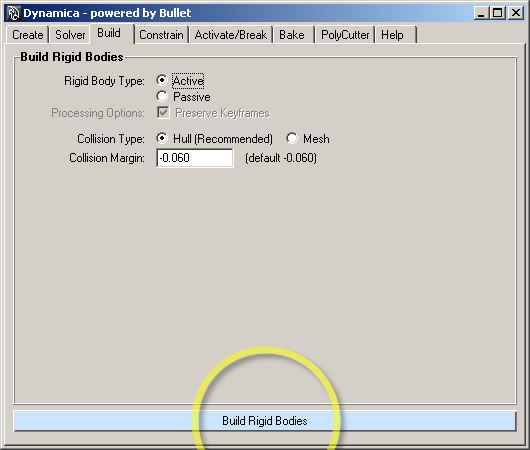Dynamica window, Build tab, Rigid Body Type: Active, Collision Type: Hull, Collision Margin: -0.060. Outliner view showing dRigidBodies and dCollisionMeshes groups, and Display Layers panel showing DynamicaMeshes and DynamicaRigiBodies layers.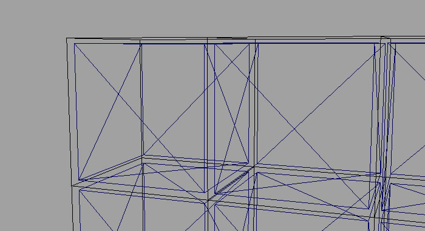Wireframe view of smaller triangulated shapes inside original poly meshes - the gap between each shape represents the collision margin.
Outliner view showing dRigidBodies and dCollisionMeshes groups, and Display Layers panel showing DynamicaMeshes and DynamicaRigiBodies layers.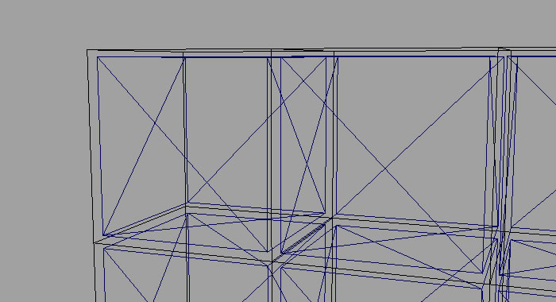Wireframe view of smaller triangulated shapes inside original poly meshes - the gap between each shape represents the collision margin. - Set the playback range to 1 - 200 frames, set the timer slider to frame 1, and click the Play button. The cubes repel each other slightly, fall along the -Y axis, and visibly collide with the ground plane (whether or not it's hidden).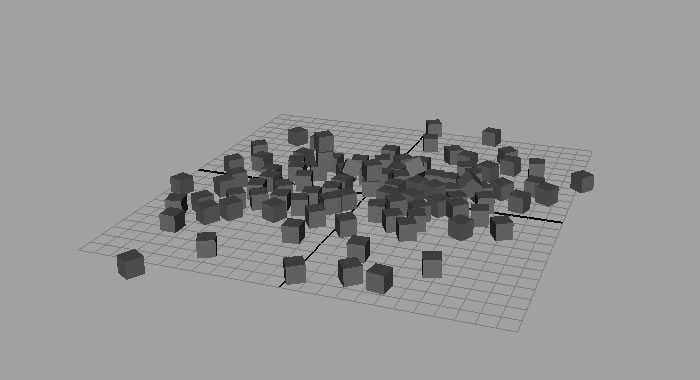Results after playing the scene from frame 1. Results may vary slightly.
- Set the time slider back to frame 1 - the cubes snap back to their original locations. Click on the Activate tab at the top of the Dynamica window. Note the default settings. Click the Activate/Break Rigid Bodies and Constraints button at the bottom of the window.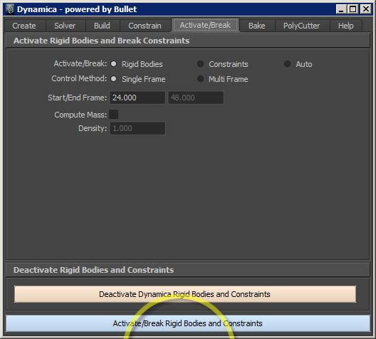Dynamica window, Activate/Break tab, Acticate/Break: Rigid Bodies, Control Method: Single Frame, Start/End Frame: 24/[disabled].
- Click the Play button. The cubes remain static until frame 24 and then fall to the ground plane. Look back at the Dynamica window, the default settings specify Single Frame activation of Rigid Bodies starting on frame 24. This is why the cubes remained inactive until frame 24.
- Select one of the cubes and open the Channel Box. Note the extra attributes: activateFrame and activateMass. The value of activateFrame determines when the rigid body becomes active while the value of activateMass specifies the mass of the rigid body when it becomes active.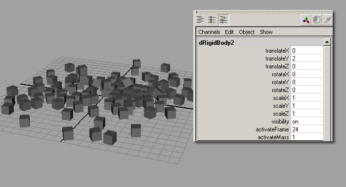Channel Box showing extra attributes activateFrame and activateMass.
- Set the time slider to frame 1 and select the cubes. In the Dynamica window under the Activate/Break tab, select Multi Frame for the Control Method. New options appear below and the End Frame field is enabled. By default the Input Method is set to Axis Gradient. Note the default Axis Direction of +X and click the Activate/Break Rigid Bodies and Constraints button at the bottom of the window.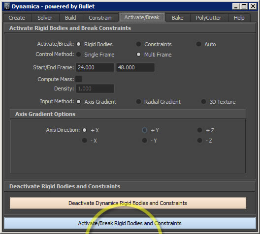Dynamica window, Activate/Break tab, Acticate/Break: Rigid Bodies, Control Method: Multi Frame, Start/End Frame: 24/48, Input Method: Axis Gradient, Axis Direction: +X.
- Click the Play button. The cubes remain static until frame 24 and then progressively fall along the +X axis. Set the playhead to frame 1 and click the play button again - this time note that the cubes start to fall on frame 24 and end on frame 48. This happens because the frame range specifed for Start/End Frame starts at 24 and ends at 48. Open the Channel Box. Select the cubes one at a time and note the value of the activateFrame attribute.
- Select one of the cubes and set it's activeFrame attribute in the Channel Box to 0. Leave this object selected.
- Set the time slider to frame 1 and click the Play button. Note the selected cube no longer falls. Setting activeFrame to 0 effectively disables activation.
 Channel Box showing activateFrame attribute value of 0 - this disables activation.
Channel Box showing activateFrame attribute value of 0 - this disables activation. - Set the time slider to frame 1 and select the top row of cubes. Under the Activate/Break tab, click the Deactivate Dynamica Rigid Bodies and Constraints. This sets the activateFrame attribute of all selected rigid bodies to 0.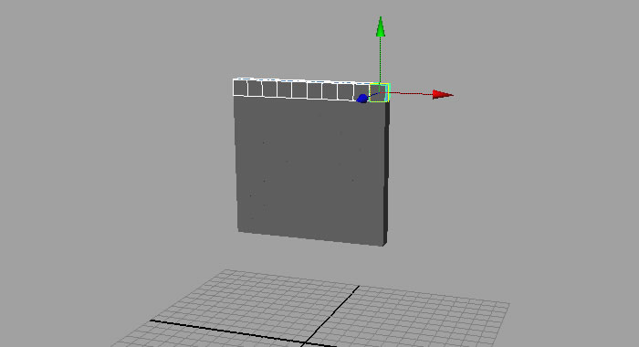Top row of cubes selected.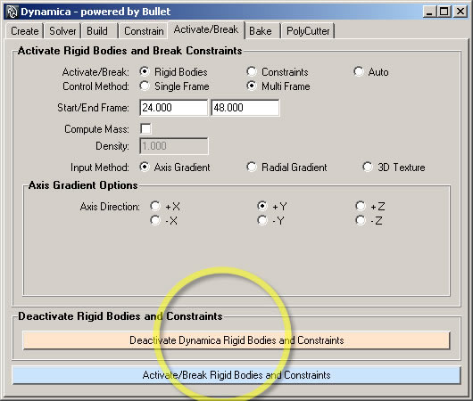Dynamica window, Activate/Break tab, click Deactivate Dynamica Rigid Bodies and Constraints button
- Click the play button. The top row of cubes remain static because their activeFrame attributes are all set to 0.
- Select the Bake tab in the Dynamica window. Leave the Bake option set to All dRigidBodies, set the Start/End Frame to 1/200, leave the Post Processing Options at their defaults, and click the Bake Rigid Bodies button.
If you have not saved the scene yet, an error message will appear in the command line directing you to save the scene into a valid Maya project. Once the scene is saved, click the Bake Rigid Bodies button and a Save Scene dialog box will appear asking if you want to save the scene before baking. Choose yes or no.
The scene will reset and then play back frame by frame baking the transforms of each rigid body. The scene has been saved under a new filename with the suffix "_BAKED". There is also a new group named dBaked which contains the baked meshes and a new Display Layer named DynamicaBaked which controls their display styles. 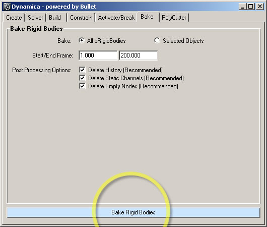Dynamica window, Bake tab, click Bake Rigid Bodies. - Select one of the moving cubes and look at the time slider. A key tick is visible on every frame from 1 to 200. The motion of each cube is now controlled by keys rather than forces and collisions. Because Delete Static Channels was enabled, the static cubes along the top row have no keys.
 Simulation captured as baked animation.
Simulation captured as baked animation.
:)
The resulting baked scene can now be sent down the pipeline or used as the basis for continued simulation. The baked cubes can be used as passive colliders or mesh emitters for additional rigid body, cloth, particle, or fluid simulation.
Things to keep in mind while working with rigid bodies:
- Optimum collision margin settings will vary depending on the size and shape of the geometry involved. higher collision margins (up to and above 0) will cause the rigid bodies to repel each other when active - this can be desirable for explosions and forceful impacts, but it can produce visible collision gaps.
- Very small rigid bodies may not behave as expected. Dramatic penetrations can occur with very small collision shapes - resulting in erratic behavior. If a mixture of scale is needed such as crumbling walls and breaking glass, sim the large objects first then sim the smaller objects at a larger scale - after baking, objects can be scaled in groups and sped up if necessary.
This workflow will demonstrate constraint creation and breaking.
- In a new scene create a standard sized poly cylinder. Set it's X and Z scale to 0.25.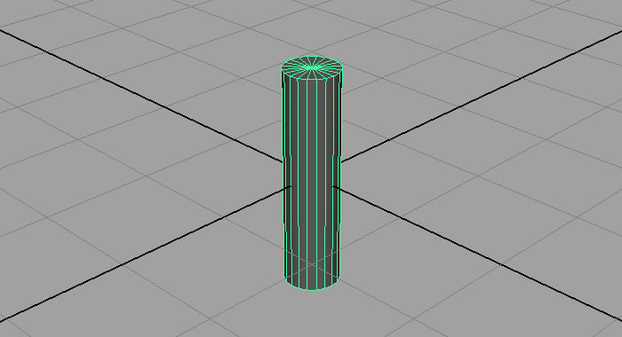Standard sized poly cylinder with X and Z scale set to 0.25.
- Duplicate it 7 times and distribute each cylinder 3 units apart along the +Y axis (hint: pressing the j key before manipulating objects will engage transform snapping). You should have 8 cylinders total.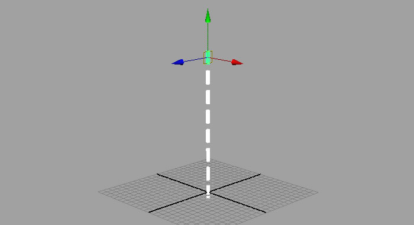8 poly cylinders distributed 3 units apart along the +Y axis.
- With the cylinders selected, click on the Build tab in the Dynamica window. Leave the options at their defaults and click the Build Rigid Bodies button.
- Set the playback range to 1 - 300 frames and click play. The rigid bodies fall along the -Y axis.
- Set the time slider back to frame 1. In the Display Layers panel, ensure that the DynamicaMeshes layer is set to reference mode and the DynamicaRigidBodies layer is set to normal.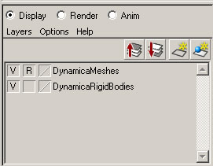Display Layers
- Again select the cubes in the viewport. This time, the rigid bodies are selected instead of the original meshes. click the Constrain tab in the Dynamica window. Leave the Constrain Type set to Nail, select Axis for the Search Method, and set Axis Direction to +Y. Click the Constrain Rigid Bodies button.
Constrains appear in the scene connecting each rigid body to the next along the +Y axis. A new display layer named DynamicaConstraints has also appeared in the Display Layers panel.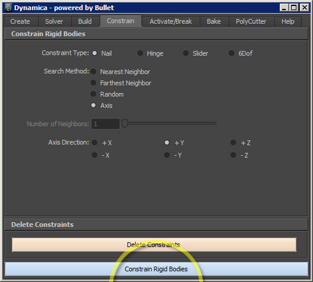Dynamica window, Constrain tab. Constraint Type: Nail, Search Method: Axis, Axis Direction: +Y, click Constrain Rigid Bodies button.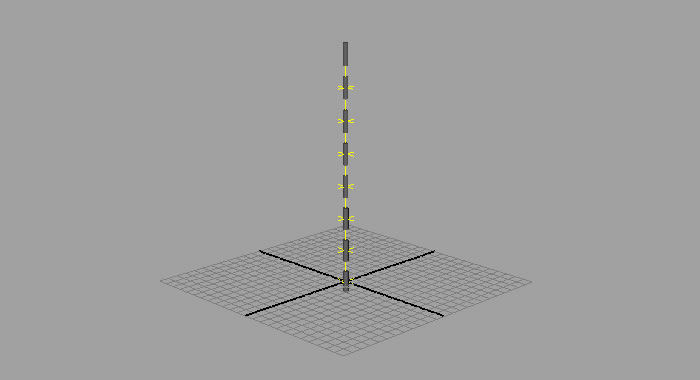Constraints connecting each rigid body. - Select the rigid body at the top of the chain. In the channel box, set it's mass attribute to 0. This converts it into a passive rigid body.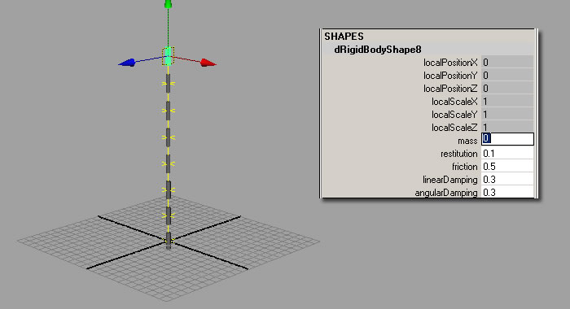Top rigid body with it's mass attribute set to 0 - this converts it into a passive rigid body.
- Click play. The rigid bodies remain static - anchored by their constraints to the top cylinder which is now passive.
- Set the time slider back to frame 1 and create a poly cube. Translate the cube 12 units along the +X axis and press the s key to set a key frame.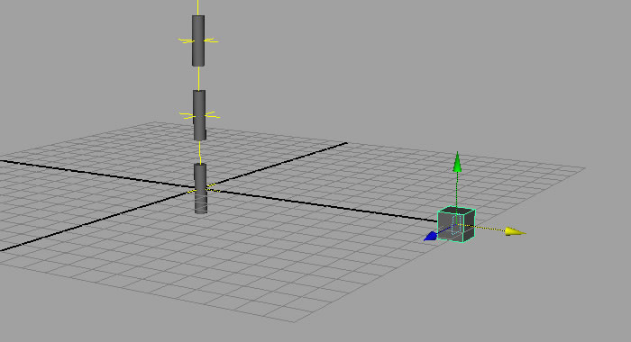Poly cube keyed at x12 y0 z0.
- Set the time slider to frame 50, translate the cube to -12 along the X axis and set another key frame. Rewind and play back the scene. The cube moves along the -X axis and passes through the rigid body at the bottom of the chain.
- Click the Build tab in the Dynamica window. Select Passive for Rigid Body Type and leave the Preserve Keyframes box checked. Click the Build Rigid Bodies button. This converts the cube into a Kinematic object - a passive rigid body controlled by key frames.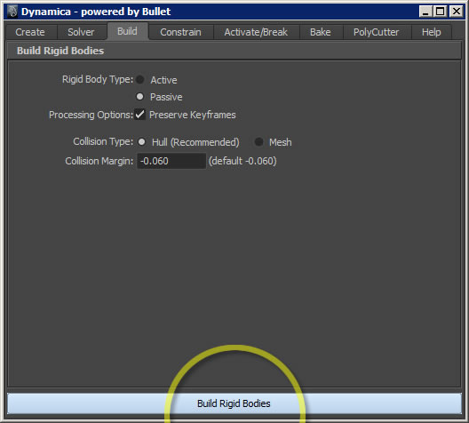Dynamica window, Build tab. Rigid Body Type: Passive, Processing Options: Preserve Keyframes, Collision Type: Hull, Collision Margin: -0.060.
- Set the time slider to frame 1 and click the play button. The cube collides with the rigid body at the bottom of the chain which causes it to swing back and forth.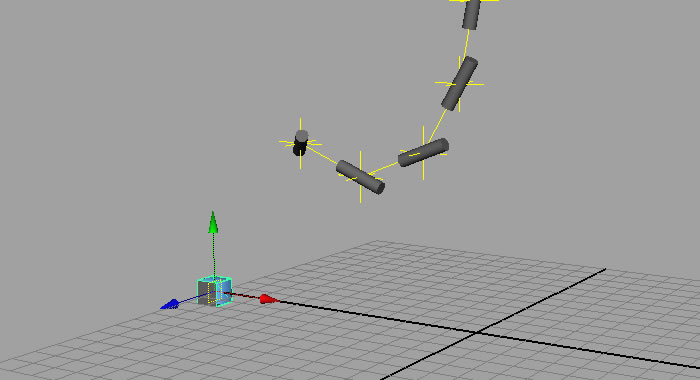Kinematic cube collides with the rigid body chain.
- The constraints are connected at the center pivot of each rigid body which results in odd behavior. Set the time slider to frame 1. Set the display mode of the DynamicaRigidBodies display layer to reference. Select the constraints in the viewport and translate them along the +Y axis until each is centered between the rigid bodies.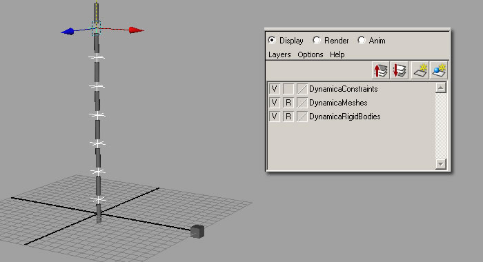Display layer settings. Constraints centered between each rigid body.
- Play back the scene. The chain now swings more naturally.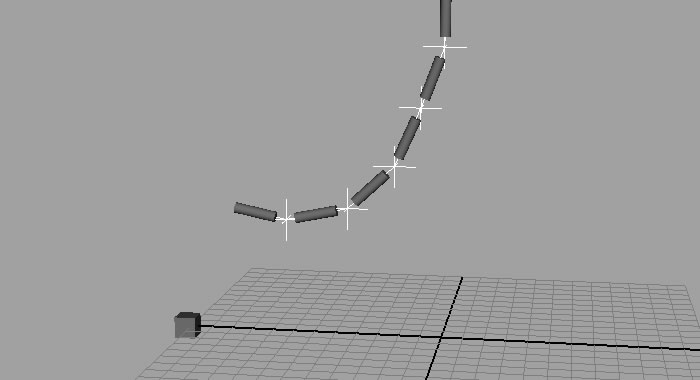Natural chain-like behavior.
- Set the display mode of the DynamicaRigidBodies display layer back to normal and select the cube. In the Channel Box, select the translateY attribute, right click, and choose Break Connections from the pop-up menu. This severs the connetion between the translateY channel and key frames. Now the cube can be moved freely along the Y axis.
- Set the time slider to frame 1 and move the cube 12 units up the +Y axis. Play back the scene. The cube now collides with the middle of the chain. It may also appear to pass through the chain - this is normal for Kinematic objects as they do not react to collisions.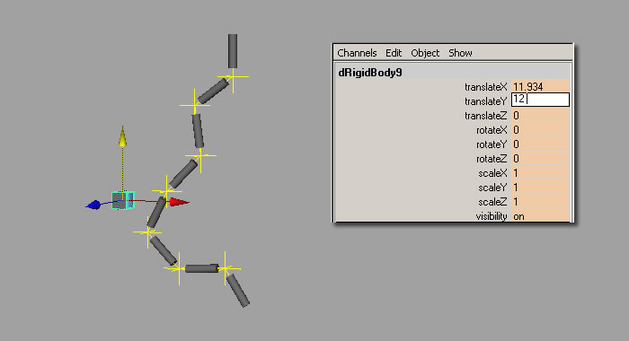Kinematic cube collides with middle of chain.
- Set the time slider to frame 1. Play back the scene and pause when the cube collides with the chain. Make note of the current frame. Select the constraint just above the point of impact. 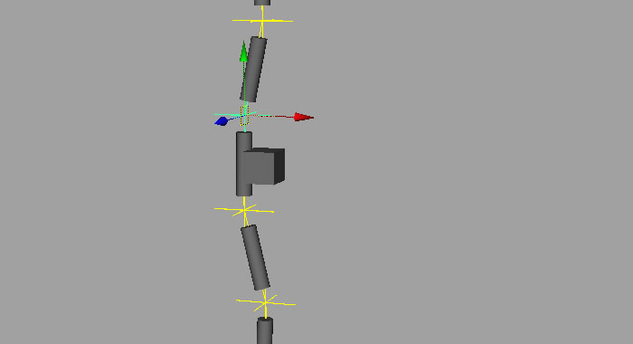Cube impact with chain. Select constraint above point of impact.
- Click on the Activate/Break tab in the Dynamica window. Set Activate/Break to Constraints and Control Method to Single Frame. Add 5 to the current frame number and enter this in the Start Frame field. Click the Activate/Break Rigid Bodies and Constraints button.
- Set the time slider to frame 1 and click the play button. The cube impacts the chain and breaks it in two. The previously selected constraint disappears as the two pieces separate. This is how constraint breaking works - constraints are removed according to the activate/break parameters specified.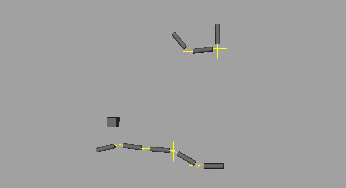Constraint breaking causes chain to snap.
:)
Constraint breaking can be used to carefully control and choreograph simulations to meet the challenges of art direction. Combining rigid body activation with constraint breaking can produce complex and compelling results.
Things to keep in mind when working with constraints:
- Binding many tightly fit rigid bodies with constraints can cause erratic behavior. This happens because the rigid bodies are trying to respect each other's boundaries while the constraints are trying to hold everything in place - this results in forced penetration which can cause high velocity corrections. To remedy this, try using the Farthest Neighbor Search Method when generating constraints and/or Enabling Split Impulse.
- 6Dof constraints are best suited for maintaining the orientation of connected rigid bodies.